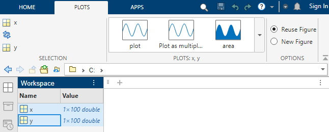
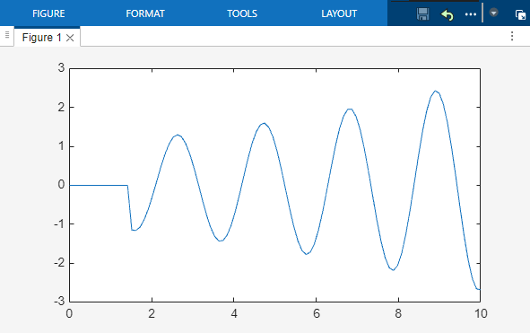
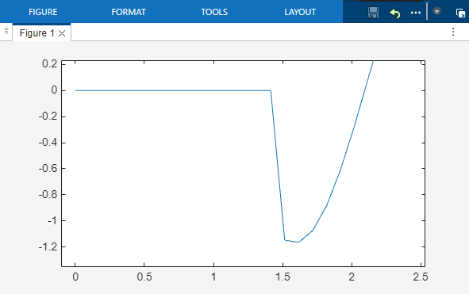
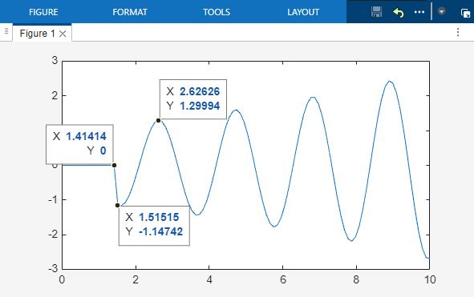
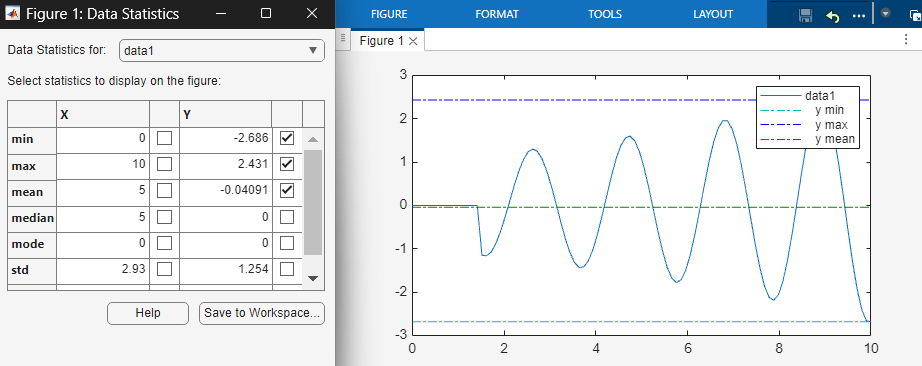
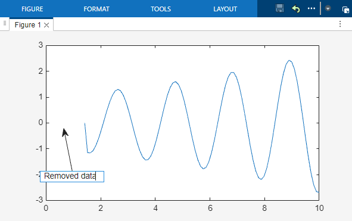
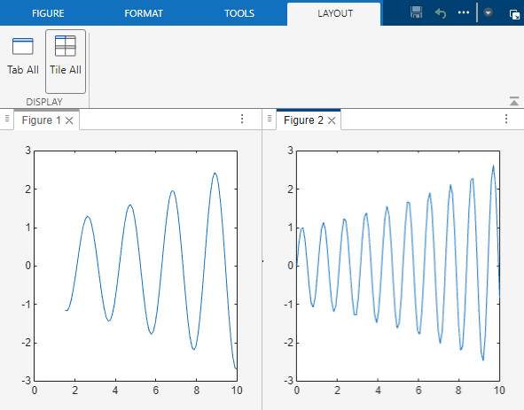

Interactively Explore and Analyze Plotted Data
These examples show how to interactively explore data by using interactions built into the axes, such as zooming, panning, and adding data tips. These examples also show how to interactively analyze data by brushing data, visualizing statistics, and adding annotations.
Explore Data
You can create a plot for variables in your workspace by selecting one or more variables in the Workspace panel and choosing a plot type from the gallery on the Plots tab.
For example, create two variables in the workspace.
x = linspace(0,10); y = exp(.1*x) .* sin(3*x); y(1:15) = 0;
Create a line plot for variables x and y.
Select the variables in the Workspace panel by holding Shift and
clicking them. Then, select the line plot in the gallery on the
Plots tab.

MATLAB® creates a line plot for the selected variables.

Zoom and Pan Data
The axes have several interactions for exploring your data that are enabled by default. For 2-D Cartesian plots, you can zoom in and out by scrolling or pinching the axes or pan across the data by dragging the axes. To return to the original view, pause on the axes and click the Restore view button on the axes toolbar that appears.
For example, zoom into a region of the plotted data.

Display Data Values Using Data Tips
Data tips allow you to view the values of the data points you select. You can create persistent data tips by clicking data points or temporary data tips by pausing on a data point.
For example, display the values of three data points in persistent data tips.

Analyze Data
Brush and Modify Data Values
Data brushing is an interaction that is not enabled on the axes by default. You can enable brushing by pausing on the axes and clicking the Brush data button on the axes toolbar that appears. Brush a data point by clicking it, or draw a rectangular region around multiple data points. Then, right-click the selection and select an option from the context menu to replace, remove, export, or copy the data points.
For example, brush a region of data points in the plot and use the context menu to remove them.

Visualize Descriptive Statistics
You can compute and visualize descriptive statistics directly on your plot. Click Data Statistics on the Tools tab of the figure, and choose the statistics to add. You can also save these statistics to the workspace.
For example, add lines to your plot that represent the minimum, maximum, and
mean y-values.

Annotate Plot
You can add annotations to draw attention to aspects of your plot. Select an annotation from the gallery on the Figure tab.
For example, create a text arrow annotation.

Display Multiple Figures in Tiled View
To arrange two figures side-by-side, undock the figures in the same window and
select Tile All on the Layout tab of the
figure window. To access additional layout options, such as arranging tiles and
alphabetizing tabs, click the Document actions button  at the top right of the figure.
at the top right of the figure.

See Also
Functions
zoom|pan|datacursormode|brush|annotation